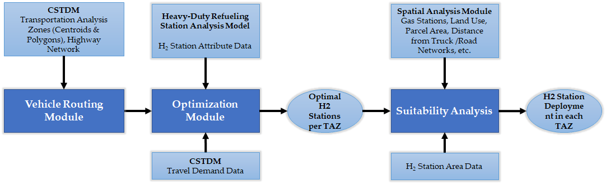

Current Research
This page contains details on current research work. Click on the links to learn more about the project and related publications.
Spatial Transportation Infrastructure, Energy, Vehicle and Emissions Model (STIEVE) for California
STIEVE model is capable of producing spatially detailed transportation scenarios for cars and trucks across several thousand geographic districts
within the state and solving for the optimal configuration of refueling stations to meet the energy demand of these vehicles. STIEVE produces projections
of hydrogen refueling demand and station needs on a spatial basis, using a “Transportation Analysis Zones (TAZ)'' level of detail. There are a total of
5454 TAZs within inland California utilized in this study. TAZs are identified by traffic modelers as areas having roughly homogenous travel characteristics.
The model, as shown in Figure below, works in three steps: estimating the demand for hydrogen fuel based on the shortest distance travel pattern of current
vehicle stock, finding the optimal number and size of stations within the driving range covering the maximum demand, and performing suitability analysis
using various geospatial data for the station deployment on the ground.

#Mentor4Nepal Initiative
#Mentor4Nepal Initiative is for recent graduates and early career professionals focusing on the enhancement of one’s skill set, support for a research project, and a collaborative publication. Various sectors such as #engineering, #environmentalscience, #forestry, #agriculture, #transportation, #publichealth, #management, and #informationtechnology can take advantage of both #geospatial and artificial technologies (GeoAI).